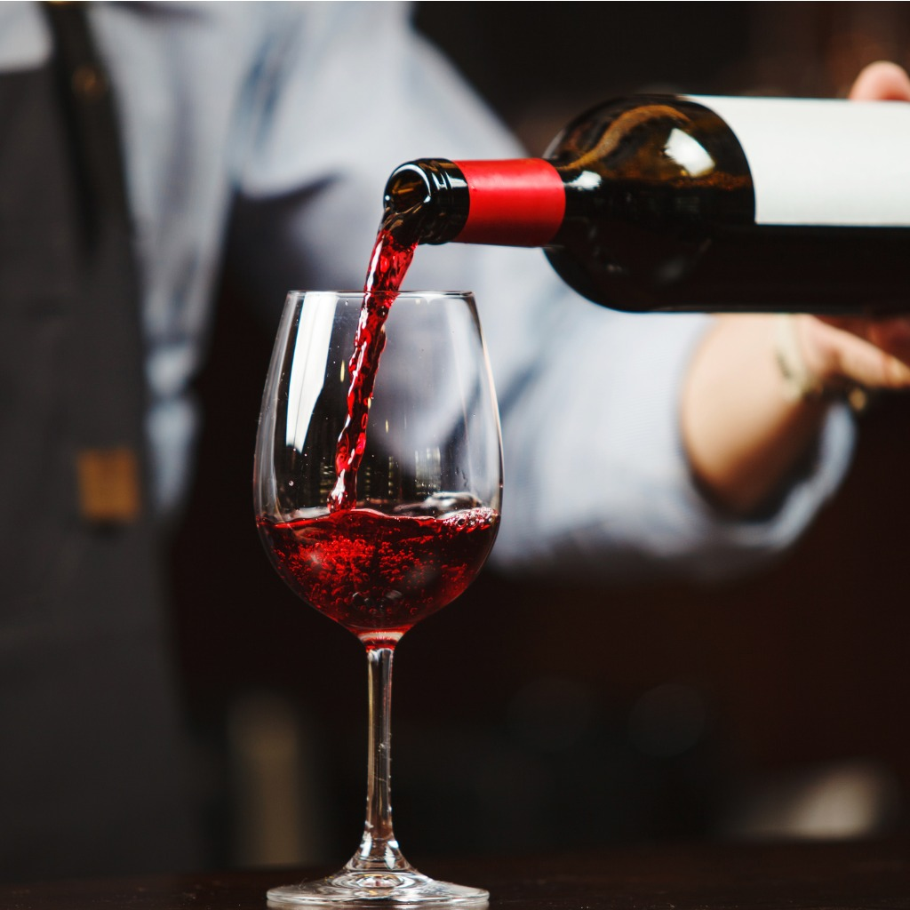

Baruch Bartending School
The Primier Bartending School In New York!
Courses Available now!
Bartending Certification

Beginners seeking an industry-level bartender certification program, and bartenders looking to step up their game. This intensive course is equivalent to months of on-the-job training. Hands-on, behind-the-bar training!S
Advance Mixology Certification

Good mixologists are in big demand. So if you are looking to work in upscale cocktail bars, then you need to step up your game. Held in a speakeasy bar. Must be 21 - premium spirits and organic produce is used throughout this mixology program.
Bar & Restaurant Wine Service
A comprehensive level 1 course in bar & restaurant wine knowledge and service for bartenders & servers. Limited to 6 students. Must be 21 or over.